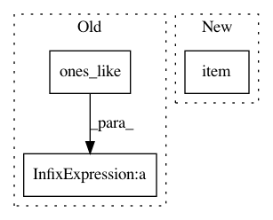

76e1a4df9ed4303b5a9010347b467dd9b804d515,rllib/agents/ddpg/ddpg_torch_policy.py,,ddpg_actor_critic_loss,#Any#Any#Any#Any#,30
Before Change
target_noise_clip)
policy_tp1_smoothed = torch.clamp(
policy_tp1 + clipped_normal_sample,
policy.action_space.low * torch.ones_like(policy_tp1),
policy.action_space.high * torch.ones_like(policy_tp1))
else:
// No smoothing, just use deterministic actions.
After Change
target_noise_clip)
policy_tp1_smoothed = torch.clamp(policy_tp1 + clipped_normal_sample,
policy.action_space.low.item(0),
policy.action_space.high.item(0))
else:
// No smoothing, just use deterministic actions.
policy_tp1_smoothed = policy_tp1
In pattern: SUPERPATTERN
Frequency: 4
Non-data size: 3
Instances
Project Name: ray-project/ray
Commit Name: 76e1a4df9ed4303b5a9010347b467dd9b804d515
Time: 2020-05-01
Author: sven@anyscale.io
File Name: rllib/agents/ddpg/ddpg_torch_policy.py
Class Name:
Method Name: ddpg_actor_critic_loss
Project Name: ray-project/ray
Commit Name: 76e1a4df9ed4303b5a9010347b467dd9b804d515
Time: 2020-05-01
Author: sven@anyscale.io
File Name: rllib/utils/exploration/gaussian_noise.py
Class Name: GaussianNoise
Method Name: _get_torch_exploration_action
Project Name: rusty1s/pytorch_geometric
Commit Name: d08f673481a2cfaa0ce702e80cc22cdd25e600e5
Time: 2020-05-31
Author: matthias.fey@tu-dortmund.de
File Name: torch_geometric/nn/models/schnet.py
Class Name: GaussianSmearing
Method Name: __init__
Project Name: rusty1s/pytorch_geometric
Commit Name: 6ad34e5887f847aeb9f681e8f290d5877b76e52b
Time: 2020-05-13
Author: matthias.fey@tu-dortmund.de
File Name: torch_geometric/nn/models/schnet.py
Class Name: GaussianSmearing
Method Name: __init__